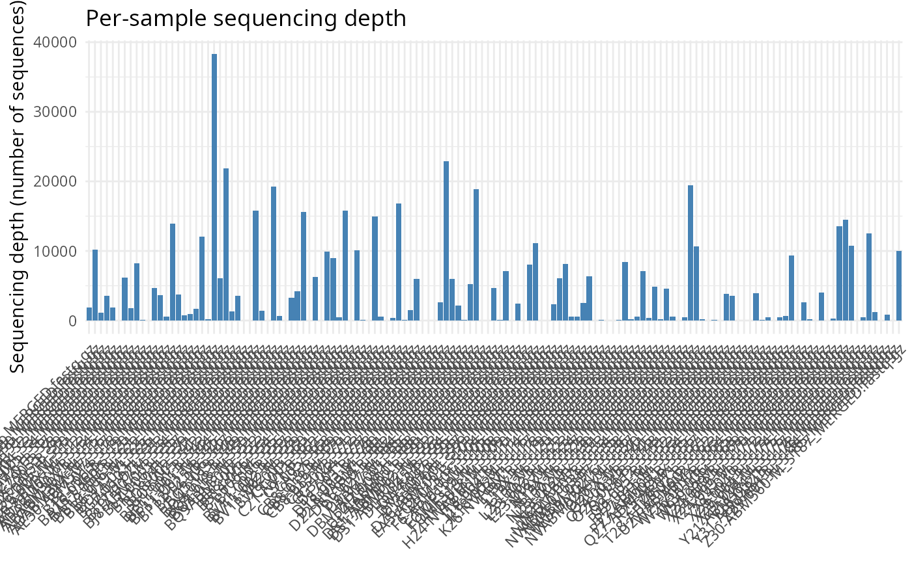
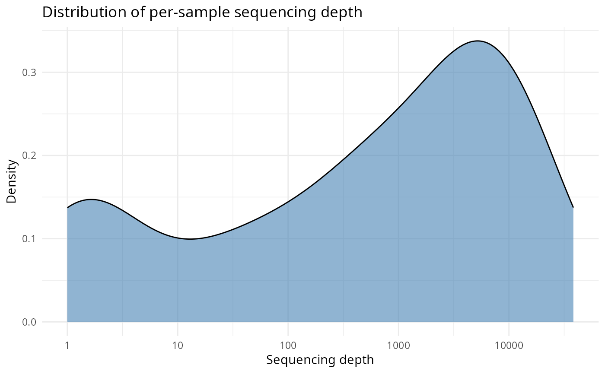
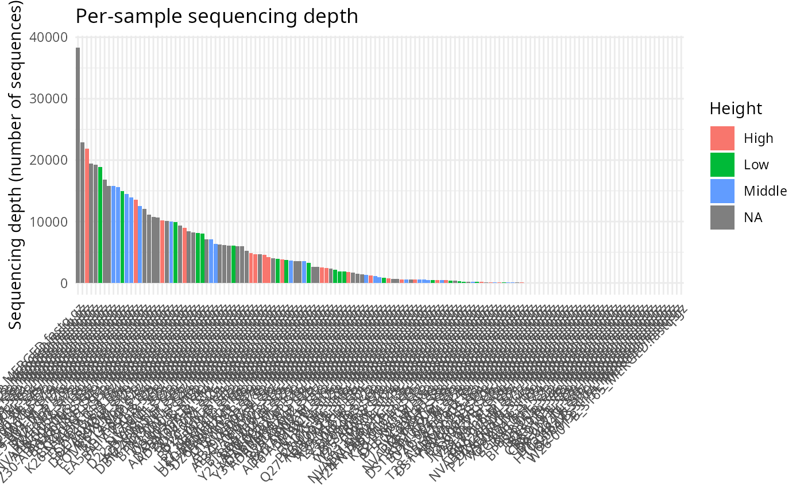
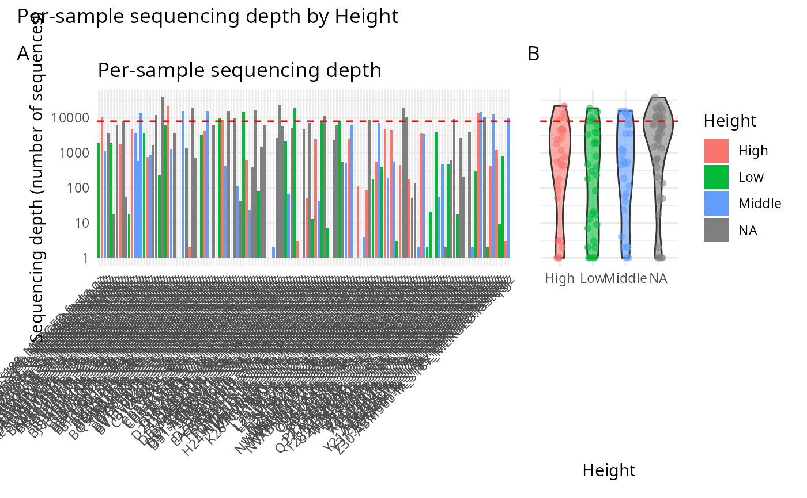
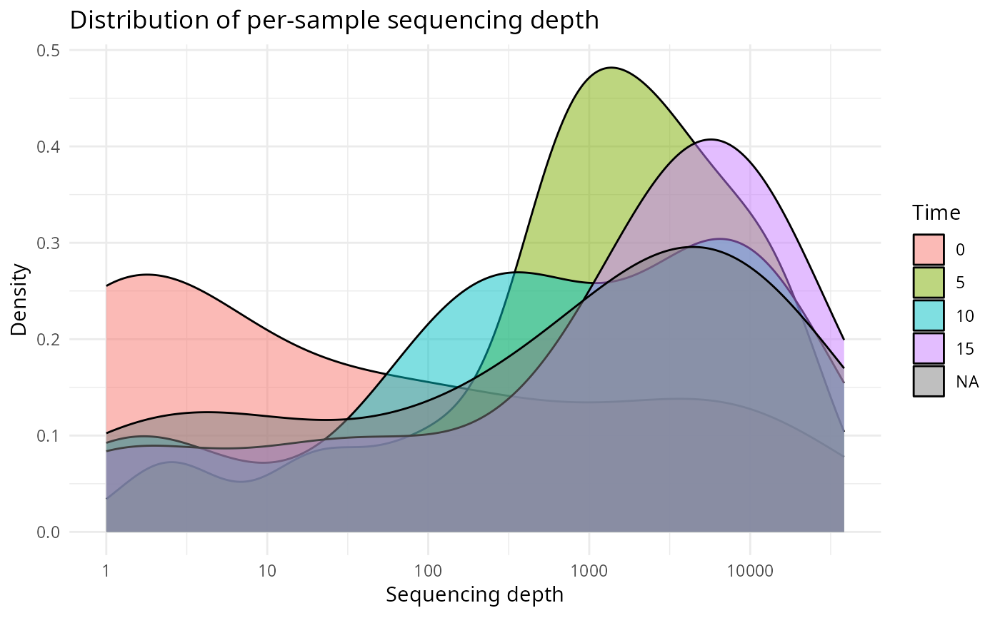

Plot per-sample read depth (number of sequences)
Source:R/plot_sample_depth_pq.R
plot_sample_depth_pq.Rd
Draw a bar or density plot of per-sample sequencing depth
(phyloseq::sample_sums()) for a phyloseq object. Useful as a quick
QA plot to identify low-depth samples before downstream analyses.
A reference line at threshold (when supplied) is drawn to make the
cutoff visible.
When add_violin = TRUE and color_fac is supplied, a marginal
violin plot is placed to the right of the bar plot. Both panels share
the y-axis (sequencing depth): panel A shows the vertical per-sample
bars, panel B shows a vertical violin of depth by color_fac with
jittered points (alpha = 0.5) for individual samples. This makes it
easy to judge, at a glance, whether sequencing depth differs between
groups of samples.
Usage
plot_sample_depth_pq(
physeq,
geom = c("bar", "density"),
color_fac = NULL,
threshold = NULL,
log10 = FALSE,
sort = FALSE,
add_violin = FALSE
)Arguments
- physeq
(required) A phyloseq::phyloseq object.
- geom
(character, default "bar") One of
"bar"(a single bar per sample) or"density"(a smoothed density estimate).- color_fac
(character, default NULL) Optional name of a column in
phyloseq::sample_data()to fill the bars/violin/density by. Non-categorical columns are coerced to factor. Whengeom = "density", one overlapping density curve is drawn per level ofcolor_fac.- threshold
(numeric, default NULL) Optional horizontal reference line drawn at this depth value. Common use: the rarefaction cutoff.
- log10
(logical, default FALSE) If TRUE, the y-axis (or the density's x-axis) is log10-transformed.
- sort
(logical, default FALSE) If TRUE, samples are sorted from highest to lowest depth. Useful for bar plots to spot outliers at a glance.
- add_violin
(logical, default FALSE) If TRUE, a marginal violin plot of depth by
color_fac(with jittered points,alpha = 0.5) is placed to the right of the bar plot. Both panels share the y-axis (depth). Requirescolor_facto be non-NULL andgeom = "bar"; otherwise a warning is issued and the parameter is ignored.
Value
A ggplot2::ggplot object, or a patchwork::patchwork
object when add_violin = TRUE.
Examples
# \donttest{
data(data_fungi_mini, package = "MiscMetabar")
plot_sample_depth_pq(data_fungi_mini)

plot_sample_depth_pq(data_fungi_mini, geom = "density", log10 = TRUE)

plot_sample_depth_pq(data_fungi_mini, color_fac = "Height", sort = TRUE)

plot_sample_depth_pq(data_fungi_mini, color_fac = "Height",
add_violin = TRUE, log10 = TRUE, threshold = 8000)

plot_sample_depth_pq(data_fungi_mini, color_fac = "Time",
geom = "density", log10 = TRUE)
#> "Time" is not categorical (class integer); coercing to factor.

# }